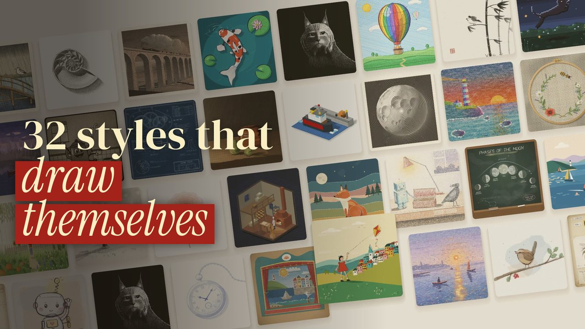

anidoodle for Claude Code: free install + my prompts
A free Claude Code plugin with 32 art styles, and every picture draws itself, mark by mark. Describe a film; it draws it, writes the music and renders an MP4 on your computer.
What you need
- Claude Code (it needs a paid Claude plan).
- anidoodle: free, open source (Apache-2.0), by Alex Greenshpun.
- Node 20+ and ffmpeg for the renders. Check with
node -vandffmpeg -version.
4 steps
Install
In Claude Code, one line at a time:/plugin marketplace add alexgreensh/anidoodle /plugin install anidoodle@alexgreensh-anidoodle
Pick a style
Crayon, watercolour, pixel art, woodblock, a 1930s cartoon, charcoal, chalkboard… 32 in total. Name it in your prompt.Describe the film in one sentence
Subject, what happens, seconds, format (9:16 for Reels), music mood.Let it render
If it stops to show a still or 8 s of music, say "go". If it offers a 233 MB piano pack, you can say no.
My prompt (tested)
Make a 12-second 9:16 film in the crayon style: a red-and-cream striped hot-air balloon draws itself on paper, mark by mark, then drifts up and out of the frame. Compose a short, warm score for it. Render it as an MP4.
First try on my Windows PC: about 13 minutes in total, the render itself 75 seconds. This is what came out:
Swap: the style, the subject, the ending, the seconds, the format, the music mood. Ideas: a watercolour flower that blooms as it's drawn, a pixel-art cat that blinks, herons in the rain as a woodblock print.
You have the drawings. Here's the system around them.
anidoodle gives you the pictures, the motion and a score. A reel people watch to the end also needs a story with a turn, voices and a sound on every hit. I don't build that part by hand anymore: Claude Code runs my content every day, from the morning idea list to the edit, the posting and the DMs. Even the DM that sent you here went out by itself. Here it is running:
Under a minute, sound on. The presenter is my AI clone, made with the methods taught inside.
Join AI Virality Creators →Today it's $9/month. Only a few spots left, then it goes up to $27/month.
What you get inside
A path for complete beginners
START HERE takes you from zero to your first consistent AI character, lesson by lesson. Then Go Viral: 8 short lessons and cheat sheets for Reels and TikTok.
Every reel I post, taken apart
The prompts, the edit choices and what each shot cost in credits. You copy what already worked instead of guessing.
Claude Code, in plain English
Master Claude Code: real builds with every file included. Claude writes the code; you say what you want and approve each step.
30+ courses on today's tools
Kling 3.0, Veo 3.1, Nano Banana Pro, ElevenLabs voices, UGC and cinematic ads, prompt systems, 4K upscaling.
Feedback from me
Post your video in the community. I read it and reply myself, and other members add their notes.
From skill to client work
Modules on finding your first clients, pricing what you make and delivering it like a pro.
Your first week
- Day 1. Join, introduce yourself and say what you want to make. I point you to the module that fits.
- Days 2–4. Build your first AI character in START HERE, one short lesson a night. (Here for Claude Code? Start Master Claude Code instead.)
- Days 5–6. Open a reel breakdown and copy its structure for your own idea.
- Day 7. Post your first video in the community and get feedback on it.
Stop saving tutorials. Start posting.
AI Virality Creators is my Skool community. Everything above is in one place, in order, and I answer you myself.
- The Early Potato breakdown: the script that turned a plugin demo into a roast, the two free voices I ran on my own computer, and where every sound sits.
- 30+ step-by-step courses and the breakdown of every reel, with prompts and credit costs.
- Personal feedback on what you post, next to 125+ creators building the same skills.
Today it's $9/month. Only a few spots left, then it goes up to $27/month.
Before you join
I'm a complete beginner. Is this too advanced?
Not at all. START HERE assumes zero experience and goes in order: your first image, your first video, then a character that looks the same in every shot. If you can type a sentence, you can follow it.
I can't code. Do I need to?
You don't need to. For the Claude Code lessons you describe what you want in plain English, Claude writes the code, and you approve each step. Every lesson shows the exact clicks.
Do I need a Skool account? Can I use it on my phone?
Skool is the app the community lives in. Signing up is free and takes about a minute when you join, and it works in the Skool phone app or any browser. Watching lessons and posting work fine on a phone; Claude Code itself runs on a computer.
I don't have much time.
The lessons are short and numbered, so you always know which one is next. One lesson an evening keeps you moving, and the community keeps you posting.
Can't I learn all of this free on YouTube?
You can start there, and free guides like this one are made for exactly that. What you won't find for free: the right order, my real project files, the credit cost of every shot, and someone who looks at your video and tells you what to fix.
AI tools change every month. Won't it be outdated?
New tools get their own modules: Kling 3.0, Veo 3.1 and Nano Banana Pro are already in. The breakdowns teach how a reel is built, and that carries over to whatever tool comes next.
AI credits get expensive. What will I spend?
Every breakdown shows what each shot cost, so you know before you start. A lot of what I teach costs 0 credits, like the guide you're reading now.
Will I get lost in a big group?
It's around 125 people, small enough that new posts get answered. I reply myself, and members comment on each other's work.
Is the person in the video real?
The presenter is my AI clone, built with the same methods taught inside. I say so every time. The community is run by me, and I answer you myself.
Will this make me money?
I can't promise income. You get the skill, finished videos to show, and modules on finding clients and pricing your work. What you earn with them is up to you.
Is it only about video?
Video is the core. Master Claude Code is the second part: real builds with every file included, starting with the Night Shift experiment. Prompting, voices and client work are in there too.
What if it's not for me?
Cancel anytime in your Skool settings. You also have the guarantee: publish your first AI video within 30 days of joining, and if you can't, message me for a refund. The full terms are on the About page.
Today it's $9/month. Only a few spots left, then it goes up to $27/month.
3 mistakes to skip
- Windows: "can't find a browser". Tell Claude: "Install Chromium with
npx playwright-core install chromium, setPLAYWRIGHT_BROWSERS_PATHto%LOCALAPPDATA%\ms-playwrightand render again." - A new ffmpeg breaks the final check (mine is 9). Tell Claude: "In the export check, replace
-vsync 0with-fps_mode passthrough." The film itself is fine. - Expecting it to copy your doodle. In my reel Claude drew the balloon from scratch. Describe it in words.